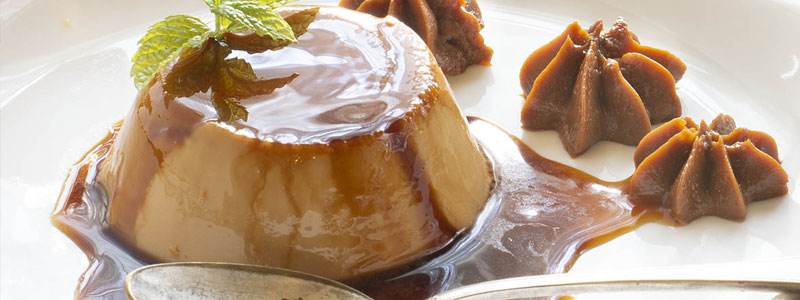

Dónde Comer
En este buscador, vas a poder filtrar por nombre, tipo de establecimiento y por barrio
ver más

En este buscador, vas a poder filtrar por nombre, tipo de establecimiento y por barrio
ver más
En buenos Aires vas a encontrar platos típicos y comida de todo el mundo
ver más
Conocé los patios y mercados en donde podés disfrutar de la mejor gastronomía de la ciudad
ver más